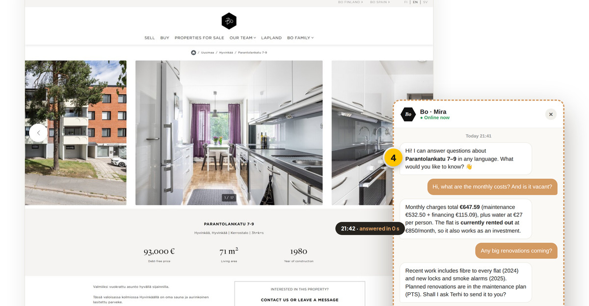
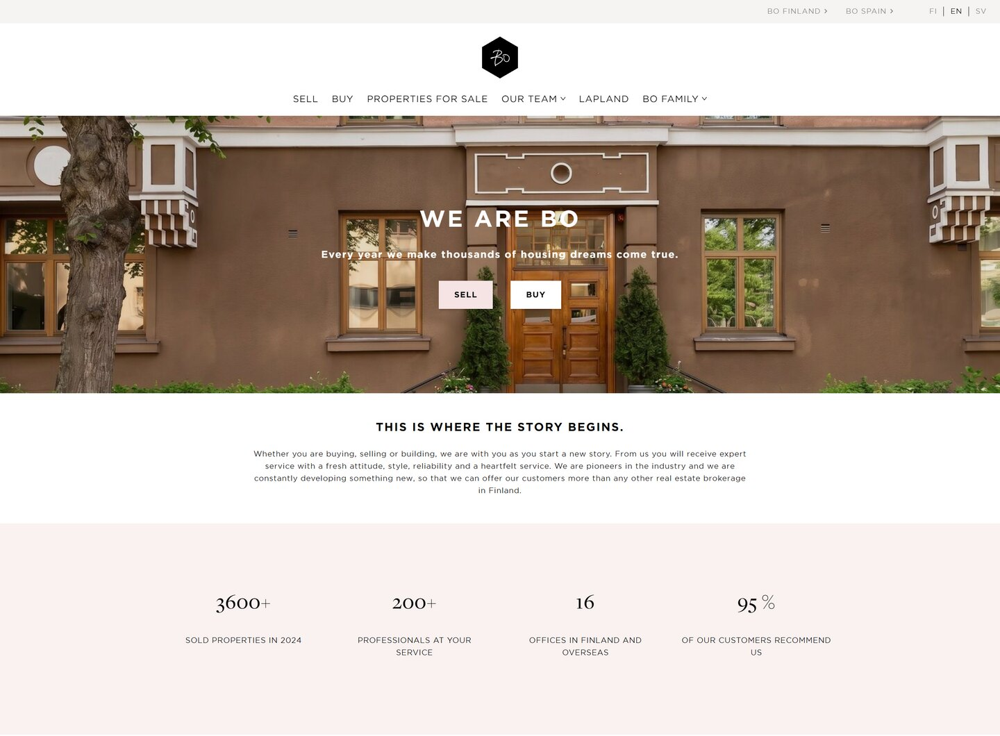
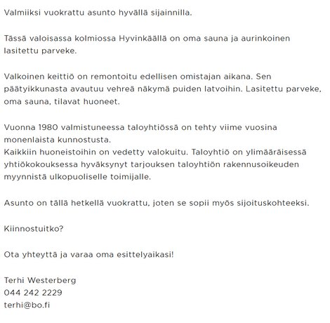
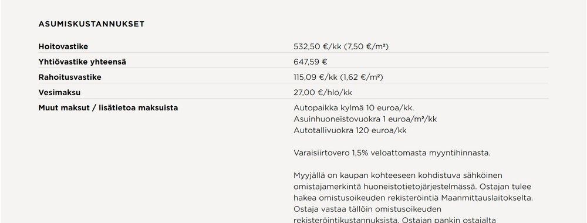
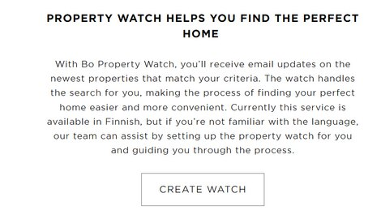
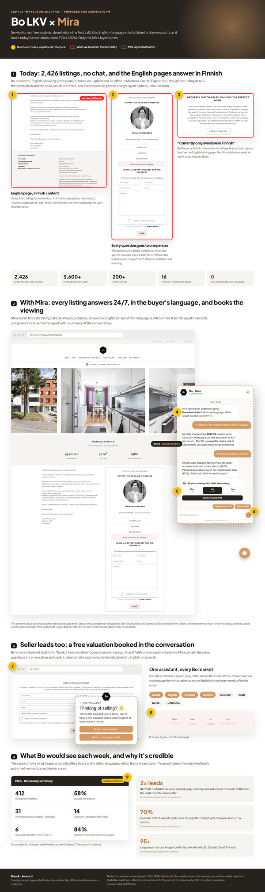

Serviceform's main calls to action invite visitors to book a free analysis: "we go through your website, social and automation, and show where you're leaving money on the table." That works well for people who come to you. This pack does the same work in advance, for a company you would like to reach.
The sample prospect is Bo LKV, one of Finland's fastest-growing real estate agencies:
Real estate is one of your five industry pages, and your RE/MAX story ("a chatbot on every property page, 2× leads") shows exactly what Mira can do here.
The finding is easy to check. Bo markets "English-speaking professionals", yet the listing pages on bo.fi/en are in Finnish: the description, the costs and the price breakdown. Bo even says that its Property Watch is "currently only available in Finnish". There is no chat. Every question goes to one agent's phone, email or form. Mira solves all three at once: it answers in the buyer's language around the clock and books the viewing straight into the agent's calendar.
I make packs like this at Knock. The process is semi-automated: I set the strategy and check every detail by hand. I've worked in this market before, so I know how these first conversations go. If this is useful, I'd like to show you in 20 minutes how it would work across a list of your target accounts.
Kira
Knock · knock.fi
A growing Finnish real estate agency that positions itself as a design-led, premium brand, selling in Finland, Lapland and on the Costa del Sol.

bo.fi/en homepage, 7 Oct 2026: "We are Bo. Every year we make thousands of housing dreams come true."
| Why Bo, why now | What it means for Mira |
|---|---|
| Growing fast (+17.7% revenue, about 205 employees in 2025) | More listings and more agents, but the same number of hours in a day |
| International by design: English site, Lapland, Marbella, "English-speaking professionals" | Answers in 95+ languages, while listing data stays in Finnish |
| Premium service promise ("95% recommend us") | Instant answers at 21:40 fit the brand, while the agent stays the face |
| Calendar booking already exists ("Book a time from my calendar") | Mira books into the same calendars, so there's no new process |
| Competitor RE/MAX already uses Serviceform | A proven case in their own industry |
On bo.fi/en/realty/bk4324506 the description, "Huoneisto", "Asumiskustannukset" and "Hinta" are all in Finnish. An English-speaking buyer can see the price, but not the maintenance charge or what's included.


Each listing offers the agent's phone, email, calendar and a contact form. With 2,426 listings and 200+ professionals, that's roughly a dozen listings per person, all answering the same questions (costs, renovations, availability) one at a time.
Bo Property Watch, the email service that brings buyers back, says so on the English buying page. Non-Finnish buyers need an agent to set it up.

This is a qualitative view. Check the Finnish site (bo.fi) for a chat before sending, because we reviewed the English pages only.
What a buyer asks about one listing, and where the answer already sits on bo.fi. Mira learns this data, so it can answer any listing in any language without extra work from the agent.
| Buyer asks (any language) | Where the answer is today | Example: Parantolankatu 7–9 | Mira |
|---|---|---|---|
| What are the monthly costs? | "Asumiskustannukset" (Finnish) | €647.59/month + water €27/person | Answers |
| Is it vacant? When can I move in? | "Muita tietoja → Vapautuu" | Rented out, €850/month | Answers |
| What has been renovated? | "Tehdyt korjaukset" (Finnish) | Fibre 2024, locks and smoke alarms 2025… | Answers |
| Any big renovations coming? | "Ks. lisätietoa PTS:stä" | In the maintenance plan | Hands to agent |
| What's the debt-free price vs. the selling price? | "Hinta" (Finnish) | €93,000 / €89,899.22 | Answers |
| Is there a sauna? Which floor? | "Huoneisto" (Finnish) | Own sauna, floor 1 of 4 | Answers |
| Can I see it this weekend? | Agent's calendar link | Agent's free times | Books |
| Can you find me something similar? | Property Watch (Finnish only) | n/a | Collects criteria |
| What's my own home worth? | 8-field valuation form | n/a | Books a valuation |
All listing data is from bo.fi/en/realty/bk4324506, 7 Oct 2026. "Mira" shows the intended behaviour, based on serviceform.fi's description (it learns from content, answers, books and hands over to a person). Confirm the setup with the Serviceform team.
Agents still own every deal. Mira only removes the waiting.
The concept page is a separate long PDF. It shows bo.fi exactly as it looks today, with the Mira layer added in tan dashed lines. Each yellow number on it matches a note below.

Concept page, top part (scaled down).
The description, costs and price breakdown on bo.fi/en are in Finnish.
Phone, email, calendar and a form. Nothing answers instantly.
Bo's own wording on the English buying page.
Costs, rental status and renovations in English at 21:41, using only data already on the page. Illustrative UI
Into the agent's calendar, which Bo already offers on every listing.
"Talk to Terhi" passes the whole conversation along, so the agent starts warm.
The 8-field valuation form becomes a one-minute chat that ends in a booked valuation.
Finnish, English, Swedish and Spanish for Helsinki, Lapland and the Costa del Sol, and 95+ languages in total.
After-hours activity Bo can't see today, alongside the RE/MAX and Gedauto results. Example numbers
These are deliberately cautious assumptions, and Bo can swap in its own numbers. The revenue per sale is a rough average: Bo's total 2025 revenue divided by the sales it reported for 2024.
Viewing volume and conversion are assumptions, not data. Seller leads from the valuation chat aren't counted here, though each new listing brings commission of its own.
Our model assumes a small fraction of that. Bo also gets something that's hard to price: an English site that actually works in English.
Short and written from Bo's side. Attach the concept page. Written in Finnish because Bo's management works in Finnish.
Does the Finnish site (bo.fi) have a chat? Who owns digital at Bo (the marketing lead or CEO Saara Murtovaara)? Can Mira read Bo's listing feed directly? Which calendar system do the agents use?